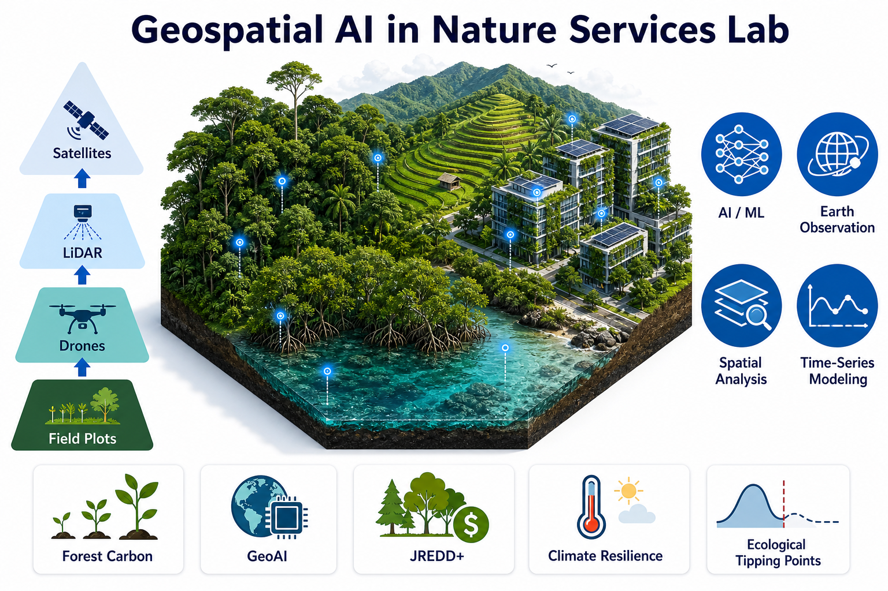

GAINS — Global Artificial Intelligence and Nature Solutions — builds
scientific tools and decision support for governments, universities,
NGOs, and industry. We treat AI and Earth observation as instruments to
test and scale ecological theory, not as a substitute for mechanism.
Mission
Scale ecological theory with GeoAI and structural equation modeling
to sustain forest carbon and biodiversity under climate change —
including resilience to extremes, early warning of tipping points,
JREDD+, Net Zero, and nature-based solutions.
Vision
An international research institute bridging field ecology,
multi-sensor remote sensing, and AI for transparent carbon MRV,
climate-risk assessment, restoration design, and early warning of
ecosystem tipping points.
Core values
Theory first. Evidence over black boxes. Open methods where possible.
Partnerships that serve climate adaptation, resilience, and
biodiversity priorities.
Scope
Forests, mangroves, urban greenspace, agroforestry, and coastal
systems under intensifying climate extremes — with methods that
transfer across tropical and subtropical landscapes.
Research programs
Six themes that define GAINS
Organized research programs spanning forest carbon, climate extremes and
tipping points, biodiversity, AI for Earth, remote sensing, and digital
twin forests.
01
Forest Carbon & Climate Change
Carbon accounting, sequestration, carbon stability under a changing
climate, MRV, JREDD+, and Net Zero pathways for forests and blue
carbon.
02
Climate Extremes, Resilience & Tipping Points
Cyclones, heat, drought, salinity, and compound extremes; recovery
trajectories; critical slowing down (CSD); long-term vegetation
signals (e.g. kNDVI); and early warning of ecological tipping points.
03
Biodiversity & Ecosystem Functioning
Functional composition, multifunctionality, structural diversity,
and ecological modeling with SEM — how biodiversity sustains
function under climate stress.
04
AI for Earth
Machine learning, deep learning, GeoAI, foundation models, and
explainable AI for monitoring, resilience forecasting, and decision
support.
05
Remote Sensing
Satellite, drone, TLS/LiDAR, hyperspectral, radar, GEDI, Planet,
and MODIS — fused for multi-scale observation of change, extremes,
and recovery.
06
Digital Twin Forests
Living digital representations of stand structure, carbon,
resilience, and tipping risk — linking plots, UAV/LiDAR, and
satellite time series.
Institute profile
How we monitor, analyze, and act
Multi-scale monitoring, GeoAI analysis, and application pillars —
including forest carbon, climate resilience, and ecological tipping
points across urban, tropical, coastal, and agroforestry landscapes.

Publications
Evidence in leading venues
Selected papers by venue. Full list on Google Scholar (~1,483 citations;
h-index 14; i10-index 19).
Founder & Director, GAINS · Research Fellow, Remote Sensing Laboratory,
The Hong Kong Polytechnic University
Forest ecologist with a decade of experience across Kyoto University,
NASA Goddard Space Flight Center, The University of Hong Kong, Jiangmen
Laboratory of Carbon Science and Technology (HKUST Guangzhou), and The
Hong Kong Polytechnic University. His work integrates field ecology,
UAV/LiDAR, satellite remote sensing, GeoAI, machine learning, and
structural equation modeling to understand forest carbon, climate
extremes, ecosystem resilience, and tipping points — with 20+
peer-reviewed articles (~1,483 citations; h-index 14) in Nature
Communications, Global Change Biology, and Communications Earth &
Environment.
Research interests
Climate change & extreme climate
Ecosystem resilience
Ecological tipping points & CSD
Forest carbon & blue carbon
Biodiversity–ecosystem functioning
Structural equation modeling
GeoAI & Earth observation
JREDD+ & carbon MRV
Nature-based solutions
Digital twin forests
Selected experience
Research Fellow — PolyU Remote Sensing Laboratory
2026–present · Blue carbon, Net Zero trees, campus carbon offsetting
Research Fellow — JC STEM Lab of Earth Observations, PolyU
2024–2026 · Mangrove resilience, climate extremes, UAV/TLS